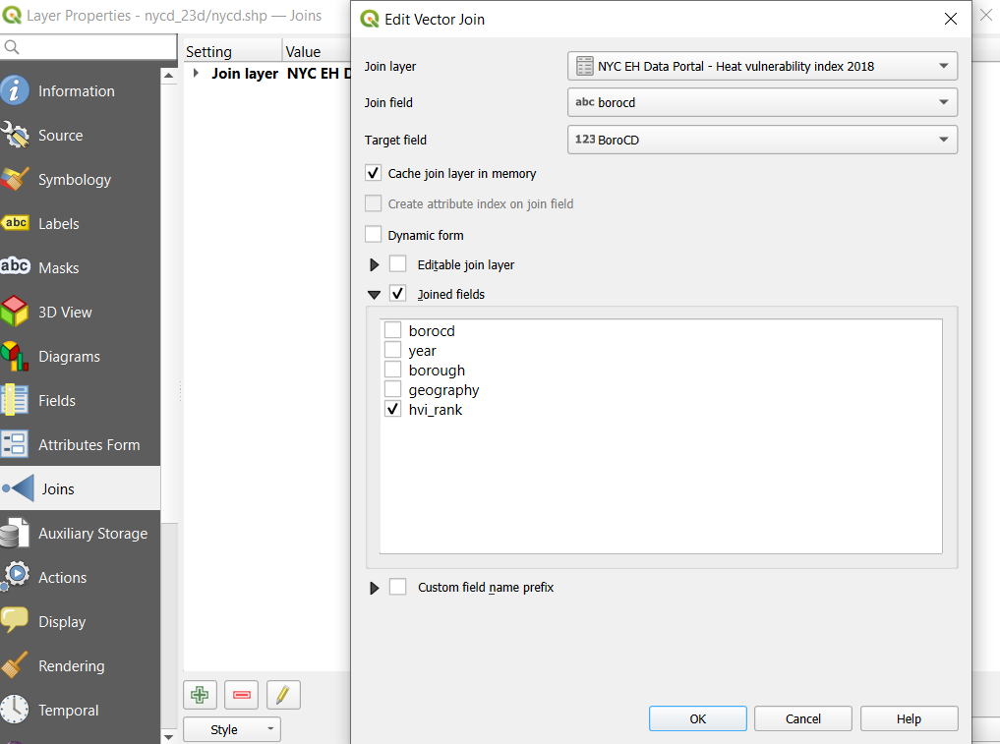
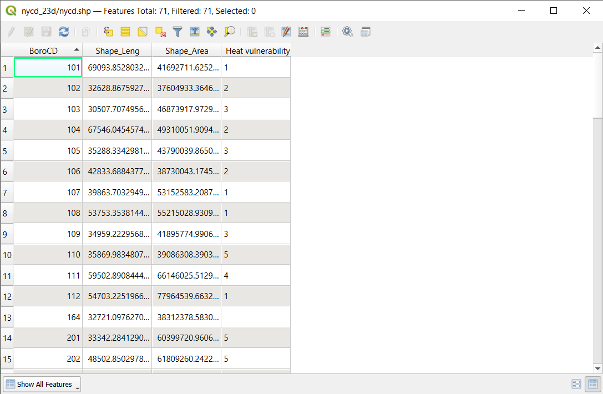
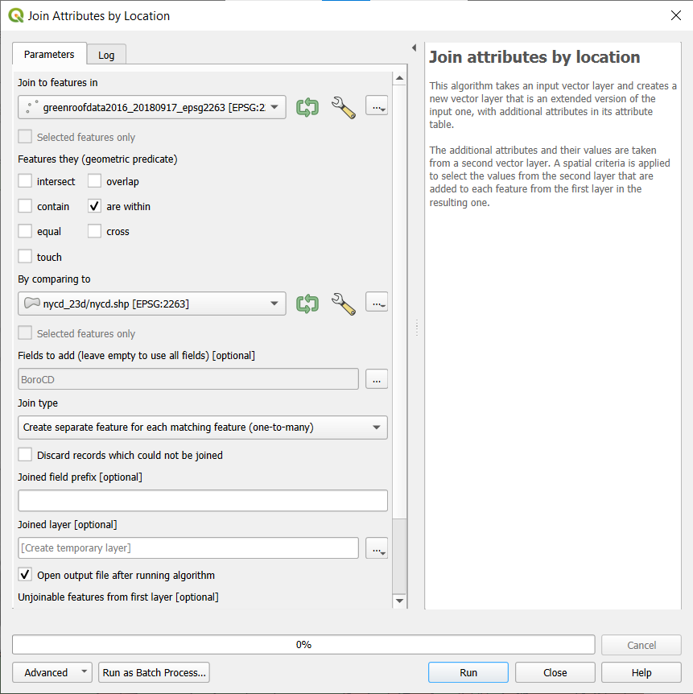
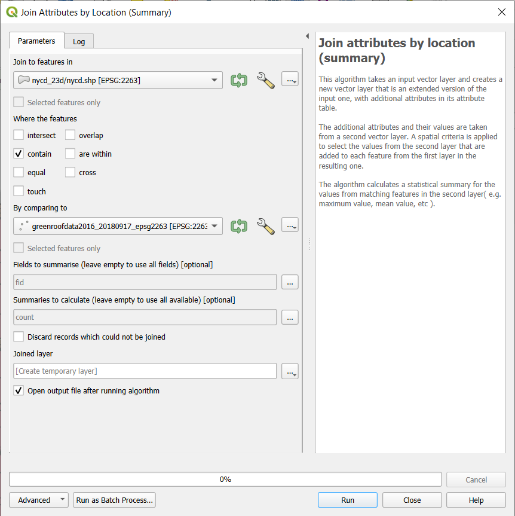
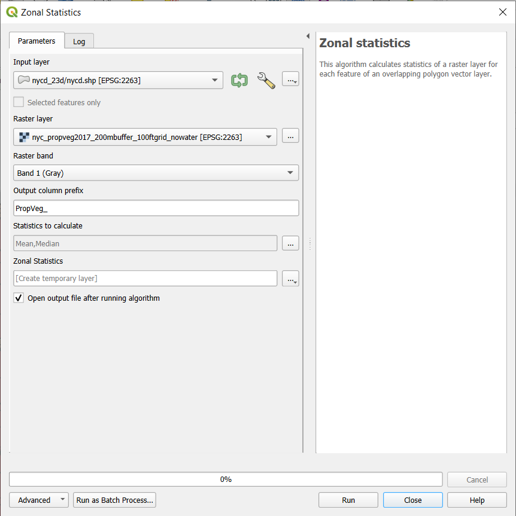
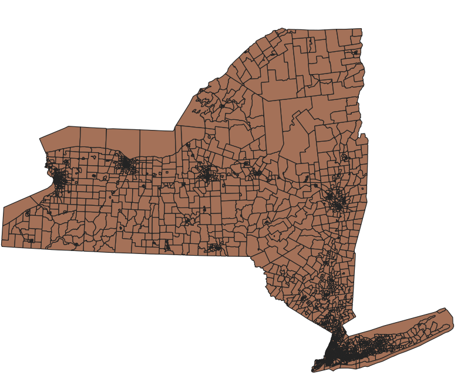
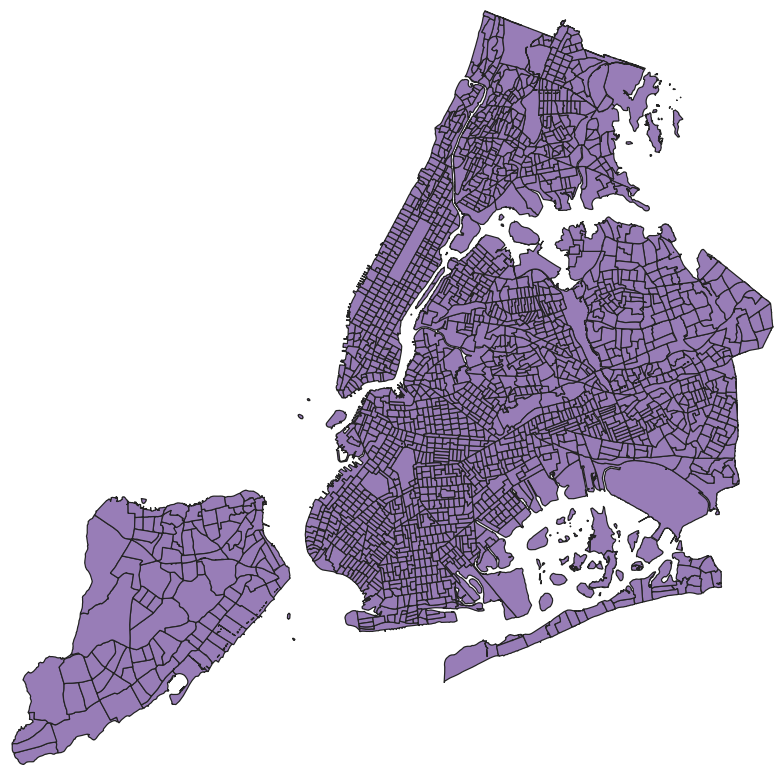

5 Working with Multiple Datasets Together
The world of spatial data operations is vast! Some examples of working with multiple data layers or tables are included here as examples. In some cases, adjustments could be made in the workflows shown based on different needs or preferences. And there are countless other operations that could be done with the tutorial datasets alone.
As you work through the below processes, take some time to re-style applicable datasets to see what the results look like, and think about potential implications in terms of the distribution of things like green roofs, and vegetation more broadly, in New York City.
5.1 Tabular Joins
In many cases data are made available for common administrative or political geographic units. For example, in the United States, data are often made available by units such as, from larger units to (generally) smaller, State, County, City, Census Tracts. In New York City, a number of datasets are released at the scale of Community Districts; each Community District has a Board that weights in on a variety of types of issues, and serves as a space for broader public engagement from the associated geographic area.
Community District boundaries for New York City, made available by the Department of City Planning, are one of the datasets shared with this tutorial. Both the Heat Vulnerability Index data, which is a non-spatial data table, and the Tree Canopy and Street Tree Summary data with the tutorial data are available for Community Districts. Thus, we should be able to associate data from these different datasets together, or “join” them based on the unique identifier for each Community District. In this case, because the Community District Boundaries as made available from the NYC Department of City Planning are the simplest, in that they primarily have the spatial polygon data and the Community District identifiers, we will join these other datasets to it. In the working project for this demo, the layer name for the Community District Boundaries is “nycd_23d/nycd.shp” (the default name from dragging and dropping the .zip folder with the data into QGIS). Before going through the below steps, I have looked at the attribute tables to find that:
- In the Heat Vulnerability Index data table, the Community District identifier is coded in the column (field)
borocd. - In the Tree Canopy and Street Tree Summary data for Community Districts, the Community District identifier is in the field
borocd. - In the Community District Boundaries dataset, the Community District identifier is in the field
BoroCD.
To create the tabular join to associate the Heat Vulnerability Index with the Community District boundaries:
- Go to the Layer Properties window for the Community District Boundaries.
- Click on the “Joins” tab on the left side of the window.
- Click the
 at the bottom.
at the bottom. - As the “Join layer” specify the Heat Vulnerability Index dataset.
- For the “Join field,” or column of data from the dataset being joined to the Community District Boundaries, specify the field that has the Community District identifiers (
borocd) - Specify the “Target field,” or the field that the Heat Vulnerability Index dataset is being joined to, as
BoroCD - In this case, we may do not really need any fields other than the index itself, or the “Score” so we can check the box next to “Joined fields” and then check the box next to the desired field.
- Click “OK” in the Joins window and then in the Layer Properties to get back to the main QGIS window.
- Open the attribute table for the Community District Boundaries and see if it worked!

And when we look at the attribute table for the Community District Boundaries, we see a column with the Heat Vulnerability Index rank. (Some rows have no entry, which is expected as those rows are for unpopulated areas, such as large parks and airports.)

5.1.1 Saving Tabular Join Results
Tabular joins accomplished through the above steps are only stored “in memory” until exported While they will be maintained when the project is saved, it is necessary to export the Community District Boundaries dataset as a new dataset to have the joined data more permanently available with that dataset.
There are multiple ways to do tabular joins in QGIS; there is another workflow that can result in directly exporting the results to a new layer. You can find that as the Join Attributes by Field Value tool in the Processing Toolbox.
5.1.2 Try it yourself!
As another tabular join, try to join the Tree Canopy and Street Tree summaries by Community District to the Community District Boundaries (with the Heat Vulnerability Index already joined). The dataset is large - consider only keeping one or two fields of interest from the Tree Canopy and Street Tree summary data.
5.2 Spatial Joins
One of the most valuable aspects of GIS software is the ability to integrate different spatial datasets. In this case, for example, we can associate something like the Community District identifier with each green roof, or we can count the number of green roofs per Community District. Lets do both!
5.2.1 Associating Broader data with Local Data
With the data available with this tutorial, we can do a spatial join to add information on Community District (e.g., which Community District) to the individual green roof points. We will use the Join Attributes by Location tool from the Processing Toolbox.
- Set the “Join to features in” to the green roof dataset
- For the “Features they (geometric predicate)” - this is basically the place to specify what kind of relationship we are looking for between the green roof points and the Community District boundaries. In this case, we want information based on where the green roof points are within the Community District boundaries.
- The only field of interest in this case to add onto the Green Roof Data is the Community District identifier (
BoroCD). - Set the “Join Type” to “Create separate feature for each matching feature (one-to-many)”
- Basically this is to specify that should there be instances where the boundary dataset had overlapping polygons, if multiple polygons overlapped with a green roof point, the output would have multiple entries for that green roof point, each with the respective Community District (in this case) identifier. This is not an issue in this case, but could be with different datasets.
- In the screenshot below I have left it so the result is only written out as a “Temporary layer” but you could opt to use the icon to the left of that box to specify a destination file.
- Click “Run”!

After this runs, you will see a new result in the Layers panel, “Joined layer,” with an associated dataset shown on the map canvas. The attribute table should include both the fields from the original Green Roof Centroid data, as well as the Community District identifier.
5.2.2 Summarizing Local data to Larger Areas
In many cases we may want to count the number of something within geographic units. In this case, we can count how many green roofs are in each Community DIstrict. To do this, we use the Join Attribute by Location (Summary) tool from the Processing Toolbox.
- Specify the “Join to features in” dataset as the Community District boundaries.
- Check the box for “contain” for “Where the features.”
- Set the “By comparing to” dataset as the Green Roof Centroid data (make sure to use the version reprojected to EPSG 2263).
- For “Fields to summarise” if you leave this out, you will end up with the desired summary statistics for all of these fields. Thus, I have selected only the unique identifier field,
fid. - For “Summaries to calculate” - if you leave blank, it will calculate all possible summaries. I selected “Count” as the metric of interest.
- Again, you can opt to write the output to a permanent file, or leave the default to create a temporary layer.

As with the previous operation, you should see a result of a “Joined layer” and see a new field reflecting the count of green roofs, as well as the fields originally in the Community District Boundaries dataset.
5.3 Raster-Polygon Overlays
In many cases it may be of interest to aggregate information from a raster data layer to a broader set of spatial boundaries. With the tutorial data, we calculate metrics from the Vegetation Density data by Community District - for example, to understand how the different Community Districts may have higher average values for vegetation density than others. To do this, we’ll use the Zonal Statistics tool from the Processing Toolbox, which calculates statistics of a raster layer for each feature of an overlapping polygon layer.
- Specify the Input layer as the COmmunity District Boundaries.
- Specify the Raster Layer as the Vegetation Density raster.
- We can specify a prefix for the new columns that will be created to help ease remembering what the new columns will have been created from (e.g., “PropVeg_”).
- We can specify a variety of statistics to calculate; in this case, I’ve specified that the the Mean and Median vegetation density values should be calculated for each Community District.
- Click “Run”!

You should see a new layer titled “Zonal Statistics” with fields reflecting the Mean and Median values for the Vegetation Density layer.
5.4 Clipping
In many cases, we have access to datasets that are much broader than our area of interest. For example, the Disadvantaged Communities Dataset is for the entirety of New York State, and the Census Tracts in it for NYC include the water areas of New York Harbor. Thus, this is a great example of a dataset that could be clipped to New York City.
First - as a look of what the dataset should look like (this version has been reprojected to EPSG 2263).

We can clip the dataset to the Community District Boundaries data layer using the “Clip” tool under the “Vector Overlay” heading in the Processing toolbox.
The dialogue box for the Clip tool is fairly simple, only asking for the Input layer (data that we want to clip) and the Overlay layer, or the dataset that we want to clip to. After clicking “Run” you should end up with a new result layer, “Clipped” that looks like this:
